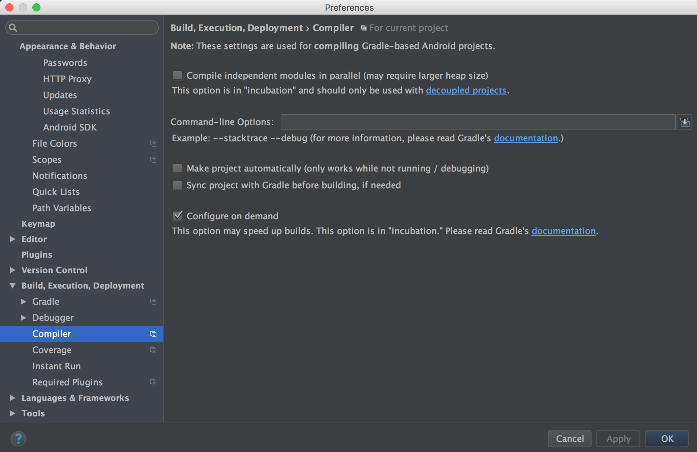
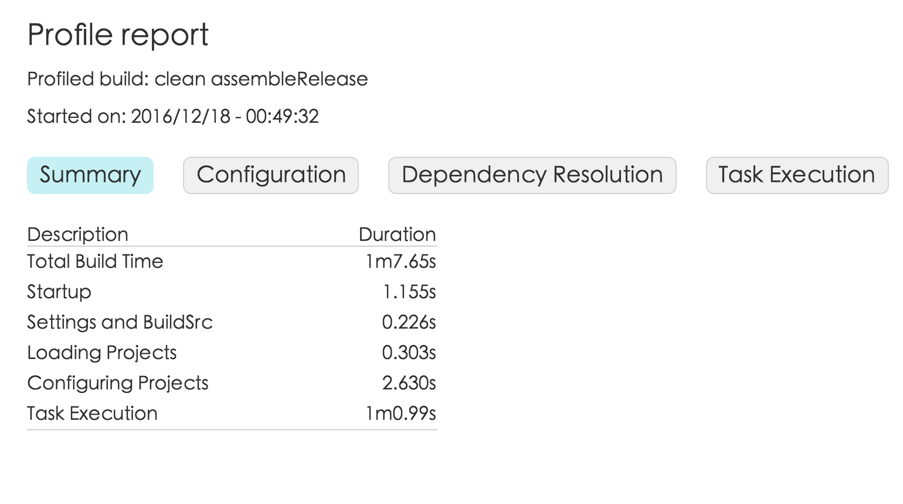

本篇介绍Gradle的高级应用，主要包括多模块项目构建、运行测试、Groovy入门与自定义插件和任务，最后是高级自定义构建。
多模块项目构建
运行测试
Groovy入门与自定义插件和任务
高级自定义构建
基础篇中已经介绍了一些基础的自定义构建包括构建版本、BuildConfig的使用、默认任务等。对于高级自定义构建主要是针对APK优化、构建速度、以及Lint进行自定义构建。
APK瘦身
随着项目的迭代APK的大小也是有增无减，而且大部分的APK都有缩减size的潜力。这时我们要明白APK增大的原因有哪些？首先不可避免的是新需求导致更多的功能注入其次是很多时候为了快速迭代使用了一些比较重的依赖库最后就是增加了很多资源密度并且有的未被使用到。所以我们要针对后两点为apk瘦身。
混淆器ProGuard
ProGuard是一个Java工具，它不仅可以缩减APK的大小，还可以在编译期优化、混淆和预校验你的代码。它通过应用中所有的代码路径来找到未被使用的代码，并将其删除，不仅这样他还会重命名类和字段来进行混淆，使得逆向工程师更难理解代码。
好了如何开启ProGuard呢？在构建类型中有一个minifyEnabled的布尔类型属性将它设为true即表示开启ProGuard。并且在构建release版本时proguardRelease任务会被执行。
|
|
值得注意的是，当开启ProGuard后在构建APK时很有可能删除一些你不希望被删除的代码，导致应用运行崩溃，这也是很多工程师不愿意使用它的原因。为了解决这个问题，你需要定义ProGuard规则，排除那些被删除或混淆的类。我们可以使用proguardFiles属性来定义ProGuard规则的文件。例如，为了保留一个类，你可以像下面这样添加一条简单的规则：
|
|
getDefaultProguardFile('proguard-android.txt')方法从Android SDK的tools/proguard文件夹下的proguard-android.txt文件中获取默认的ProGuard设置，除此之外，在单个模块下还有proguard-rules.pro文件来记录ProGuard规则，所以你可以在该文件下定义那些类不需要混淆或者不需要删除。
有关ProGuard更多内容访问官方文档http://developer.android.com/tools/help/proguard.html
资源缩减
当给APK打包时，Gradle和Gradle的Android插件可以在构建期间删除所有未使用的资源。如果你有旧的资源忘记删除，那么这个功能非常有用。另外一个当加入很多资源依赖库时而只使用其中一小部分那么可以定义配置来打包使用到的资源。
首先可以使用shrinkResources属性，将其设为true时，在构建过程中会自动判断哪些资源没有被使用并将其排除在APK之外。
使用该功能有一个前提就是必须开启ProGuard。因为缩减资源的工作方式是直到代码引用这些资源被删除之前，Android构建工具不能指出哪些资源没有被用到。
|
|
如果想要看到资源到底在构建后缩减了多少，那么可以使用sharinkReleaseResources任务来打印出包缩小的信息。
当然也可以通过构建命令添加--info标志，来获得APK缩减资源的概览：
|
|
这种方式可以移除过多的资源，特别是那些被动态使用的资源可能被意外的删除，为了防止这种情况的发生，可以在res/raw/下创建keep.xml文件，并且定义这些例外：
|
|
keep.xml文件本身也会在最终结果中剥离出来。
除了使用shrinkResources外还可以在defaultConfig中使用resConfig属性来配置要保留的资源。例如某一个依赖库中含有世界各国的语言资源包，而我们只需要英文和中文的支持并不想将其他的语言也打包到APK中：
|
|
加速构建
提高构建速度也算是高级自定义构建的核心内容了，通过前两篇的Gradle介绍，我们知道Gradle构建是分为三个阶段的：配置阶段、模块依赖阶段、任务执行阶段。所以构建提速也要从这三个阶段入手。
Gradle参数或者AndroidStudio设置
Gradle和AndroidStudio都在一下三个方面为构建提速提供了支持：
- 并行构建
- 首次构建启动Gradle daemon，下次构建时省去进程启动过程
- 调整Java虚拟机参数来加速编译过程
- 多模块可配属性Configure on demand

上图中使用AndroidStudio的设置可以看到Configure on demand挑勾了，它是默认开启的。在grade中可以在gradle.propertes文件中设置如下：
|
|
这句话表示它会忽略正在执行的task不需要的模块来限制在配置阶段的时间消化。
除了configureondemand外同样在gradle.propertes文件下设置是否开启并行构建、是否开启daemon、配置Java虚拟机参数：
|
|
注意：Xms参数用来设置初始内存大小，Xmx用来设置最大内存。
如果想将这些属性设置为系统级别，从而适用到本台机器上的所有Gradle项目上。那么你可以在Gradle的home文件夹下配置gradle.properties文件。grade的home目录通常位于系统的home目录下的.gradle隐藏文件下。对于Windows来说位于%UserProfile%.gradle下。
构建过程profile报告
如果想找出构建中让速度变慢的真正原因，那么可以拆分整个构建过程。并为其生成一份构建报告。使用–profile标志就可以实现这一点。通常生成的报告为html格式并位于根目录下的build/reports/profile下：

Jack&Jill
Jack和Jill是实验工具从构建工具21.1.1以及Gradle插件1.0.0以后引入。
Jack（Java Android Compiler kit）是一个新的Android构建工具链，其可以直接编译Java源码为Android Dalvik的可执行格式。它有自己的.jack依赖库格式，也采用了打包和缩减。Jill（Jack Intermediate Library Linker）是一个可以将.aar和.jar文件转换成.jack依赖库的工具。这些工具还在试验阶段。可用来简化Android构建过程并且缩短构建时间，但是不建议在项目生产中使用该工具进行构建。使用Jack和Jill可以通过useJack属性开启：
|
|
也可以单独应用在不同的构建脚本中：
|
|
只要设置了useJack为true，就再也不能通过ProGuard进行缩小和混淆了，但是仍然可以使用ProGuard的语法规则来指定某些规则和异常。
Lint
当通过Gradle执行一个release任务时，代码就会执行一个Lint检查。Lint是一种静态代码分析工具，它会在你的布局和Java代码中标记潜在的bug。在某些情况下甚至会阻塞整个构建过程，当然可以通过abortOnError属性来配置是否阻塞整个构建过程：
|
|
上述配置对于一个非Gradle项目迁移到Gradle的项目来说非常重要，因为迁移到Gradle项目上一般会存在一些潜在的bug例如.9图片不正确亦或是资源文件不全都会被Lint检查出来导致构架中断。